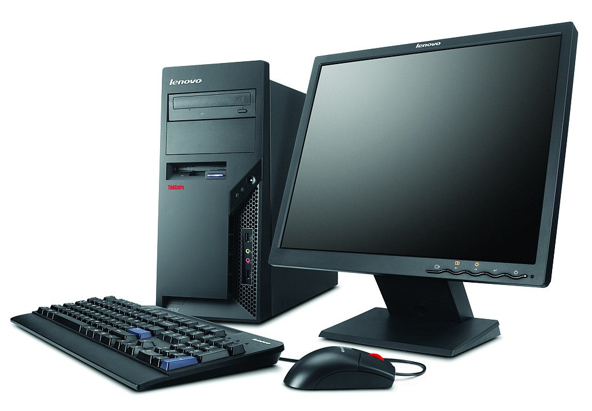
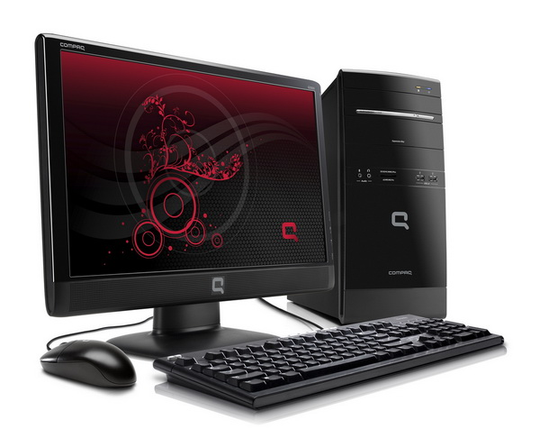
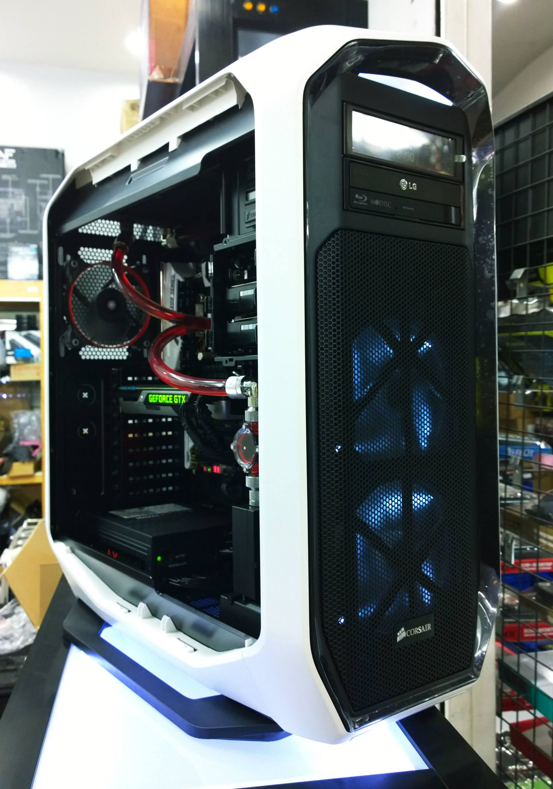
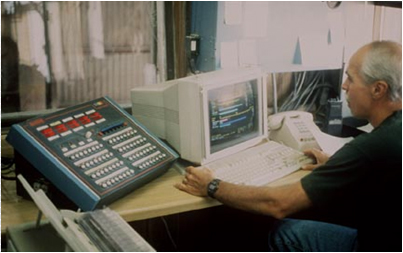
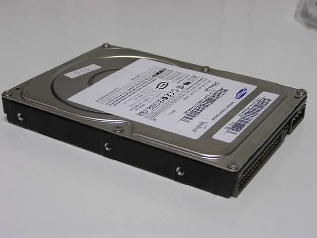
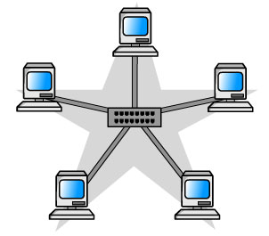

ความสำคัญของคอมพิวเตอร์

ปัจจุบันเทคโนโลยีและการสื่อสารได้เจริญก้าวหน้าอย่างรวดเร็ว ในการดำเนินชีวิตประจำวันของมนุษย์อุปกรณ์สื่อสารและคอมพิวเตอร์ได้เข้ามามีบทบาทสำคัญต่อการดำเนินกิจกรรมต่างๆ โดยเฉพาะอย่างยิ่งการศึกษาค้นคว้าและการทำธุรกิจ ด้วยความก้าวหน้าของเทคโนโลยีคอมพิวเตอร์ ทำให้องค์กรต่างๆ นำเทคโนโลยีเหล่านี้เข้ามาช่วยในการดำเนินงานขององค์กรให้มีประสิทธิภาพมากยิ่งขึ้น ไม่ว่าจะเป็นการรับ-ส่งข้อมูลข่าวสารอิเล็กทรอนิกส์ การทำธุรกิจและให้บริการบนอินเตอร์เน็ต ตลอดจนการใช้เป็นเครื่องมือช่วยในการทำงาน ไม่เพียงแต่ในองค์กรต่างๆ เท่านั้นที่นำคอมพิวเตอร์เข้ามาใช้งาน ผู้ใช้ตามบ้านโดยทั่วไป ก็ได้จัดหาคอมพิวเตอร์เข้ามาใช้ส่วนตัวกันมากขึ้น เนื่องจากคอมพิวเตอร์ในปัจจุบันมีราคาถูก แต่มีประสิทธิภาพสูง รวมทั้งสามารถใช้งานได้ง่ายกว่าในอดีตมาก จนมีการประมาณการกันว่า ในอนาคตคอมพิวเตอร์จะเป็นอุปกรณ์พื้นฐานในทุกๆ ครัวเรือนเหมือนกับเครื่องรับโทรทัศน์ ด้วยสถานการณ์ดังกล่าว การเรียนรู้การใช้งานคอมพิวเตอร์ในระดับเบื้องต้น จึงเป็นสิ่งที่มีความจำเป็นอย่างยิ่งในการดำเนินกิจกรรมต่างๆ ไม่ว่าจะเป็นในการทำงาน, การศึกษาหรือเพื่อความบันเทิง ให้มีประสิทธิภาพและความสะดวกเพิ่มมากขึ้น
คอมพิวเตอร์มีข้อดีอย่างไร ? มนุษย์เราจึงได้นำมาใช้งานกันอย่างกว้างขวาง ก่อนที่จะตอบคำถามนี้ได้ เราต้องทราบคุณสมบัติพื้นฐานของคอมพิวเตอร์เสียก่อน ซึ่งมีอยู่ 5 ประการที่สำคัญดังนี้

1.ทำงานด้วยระบบอิเล็กทรอนิกส์ (electronic machine)>
คอมพิวเตอร์เป็นอุปกรณ์อิเล็กทรอนิกส์ในการบันทึกข้อมูล ประมวลผล และแสดงผลลัพธ์ การจัดเก็บข้อมูลที่บันทึกผ่านทางแป้นพิมพ์หรืออุปกรณ์อื่นๆ ข้อมูลเหล่านี้จะถูกแปลงให้เป็นสัญญาณไฟฟ้าเพื่อให้คอมพิวเตอร์เข้าใจและสามารถประมวลผลได้ และเมื่อคอมพิวเตอร์ประมวลผลเรียบร้อยแล้ว ข้อมูลที่เป็นสัญญาณไฟฟ้าจะถูกแปลงกลับให้เป็นรูปแบบที่มนุษย์สามารถเข้าใจได้

2.การทำงานด้วยความเร็วสูง (speed)
เนื่องจากการทำงานของคอมพิวเตอร์เป็นระบบอิเล็กทรอนิกส์ ดังนั้นการดำเนินงานต่างๆ จึงสามารถกระทำได้อย่างรวดเร็ว (มากกว่าพันล้านคำสั่งในหนึ่งวินาที)

3.ความถูกต้องแม่นยำเชื่อถือได้ (accuracy and reliability)
คอมพิวเตอร์จะทำงานตามคำสั่งที่มนุษย์เขียนโปรแกรมหรือคำสั่งไว้ ถ้าผู้ใช้ป้อนข้อมูลและชุดคำสั่งมีความถูกต้อง ผลลัพธ์ที่ได้จากการประมวลผลก็จะมีความถูกต้องเชื่อถือได้

4.การเก็บข้อมูลได้ในปริมาณมาก (storage)
คอมพิวเตอร์มีหน่วยความจำที่ทำหน้าที่เก็บข้อมูลที่บันทึกเข้าไป ความสามารถในการจัดเก็บข้อมูลนี้จะขึ้นอยู่กับขนาดของคอมพิวเตอร์ เช่น เครื่องไมโครคอมพิวเตอร์ในปัจจุบันจะมีหน่วยเก็บข้อมูลสำรองที่สามารถบันทึกข้อมูลได้มากกว่าหนึ่งล้านตัวอักษร

5.การสื่อสารเชื่อมโยงข้อมูล (communication)
คอมพิวเตอร์สามารถติดต่อกับเครื่องคอมพิวเตอร์เครื่องอื่นๆ และสามารถทำงานที่หลากหลายมากขึ้นกว่าการใช้คอมพิวเตอร์แบบระบบเดี่ยว ตัวอย่างเช่น การนำคอมพิวเตอร์เชื่อมต่อระบบอินเตอร์เน็ตเพื่อการสืบค้นข้อมูลจากเครื่องคอมพิวเตอร์อื่น (remote computer)
จากคุณสมบัติของคอมพิวเตอร์เราจะเห็นได้ว่า คอมพิวเตอร์สามารถทำงานหลายๆ อย่างที่มนุษย์ไม่สามารถทำได้ หรือถ้ามนุษย์ทำได้ ก็จะใช้เวลามากและมีข้อผิดพลาดมากมาย เช่น การคำนวณตัวเลขหลายหลักเป็นจำนวนมากภายในเวลาจำกัด, การทำงานในแบบเดียวกันซ้ำๆ หลายล้านครั้ง หรือการจดจำข้อมูลตัวเลขและตัวหนังสือหลายหมื่นหน้าโดยไม่มีการลืม งานที่น่าเบื่อและยุ่งยากเหล่านี้เราสามารถใช้คอมพิวเตอร์ทำงานแทนได้ โดยเรามีหน้าที่เพียงเป็นผู้สั่งการเท่านั้น
โครงสร้างระบบคอมพิวเตอร์
องค์ประกอบของคอมพิวเตอร์
วงจรการทำงานของคอมพิวเตอร์
ความหมายและความเป็นมา
คอมพิวเตอร์
สรุป โครงสร้างระบบคอมพิวเตอร์
ภาษาคอมพิวเตอร์
ข้อมูล ผู้จัดทำ